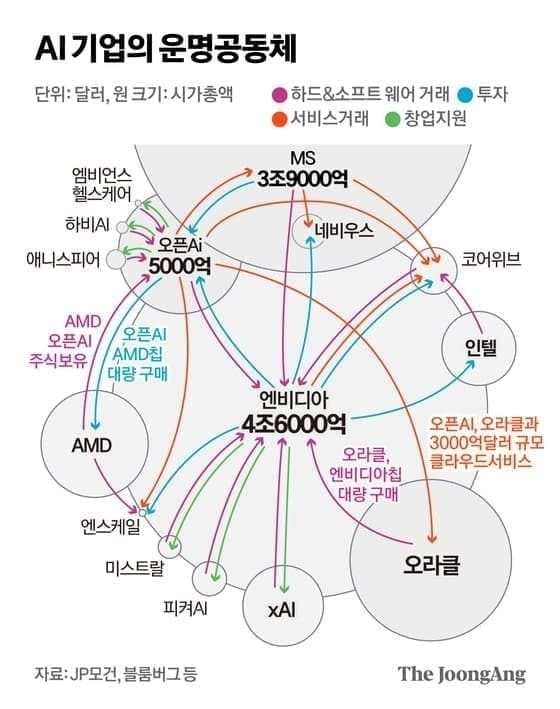
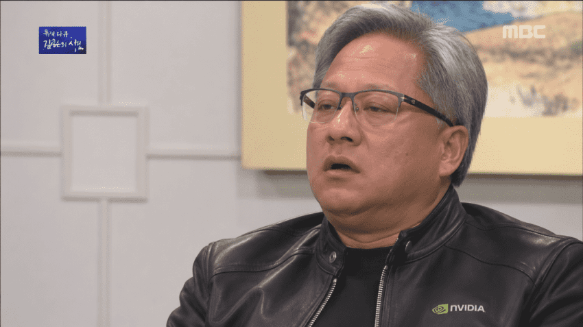
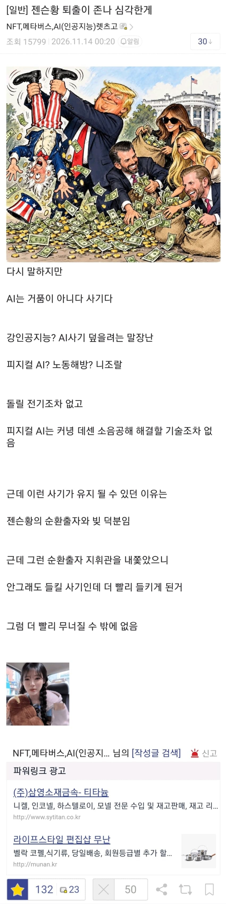
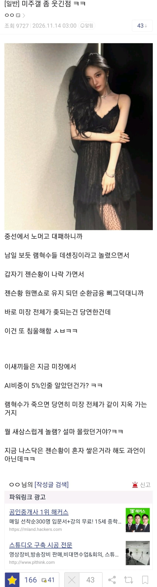
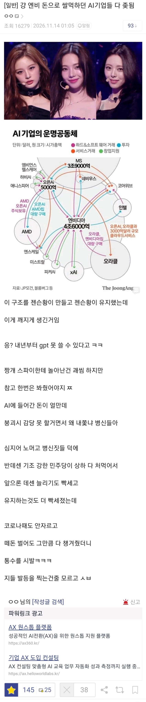
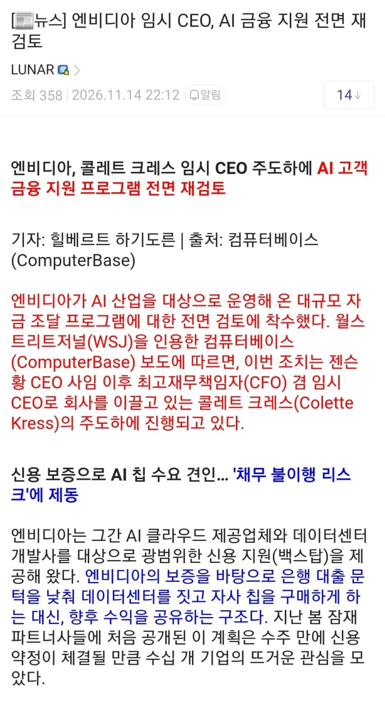
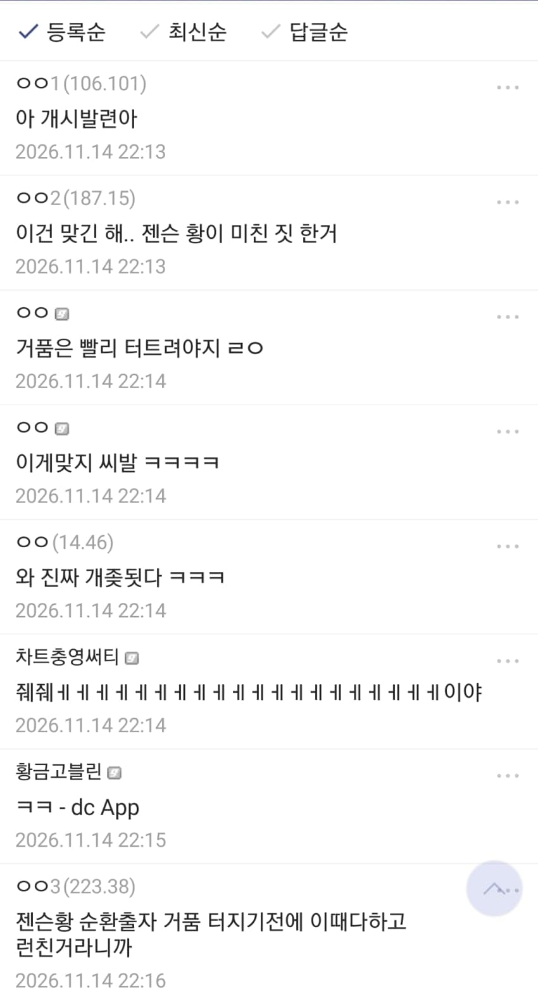

는 순환출자 막히게 생김
순환출자는 A기업이 B기업에, B기업이 C기업에, C기업이 다시 A기업에 출자하여 돌려막는 형태를 말함
돈이 돌고 도는 구조인거
그래서 이제껏 젠슨황이 엔비 돈으로 오픈AI나 클라우드 기업에 막대한 투자를 해줌
근데 이게 매출로 탈바꿈한거임
거기다 투자를 받은 오픈아이 등은 그 돈으로
다시 엔비디아의 비싼 GPU(AI 반도체)를 대거 삼
이러면 엔비가 준 돈이 상대방의 손을 거쳐
다시 엔비디아의 매출과 이익으로 잡히면서
AI 업계 전체가 돈이 돌고 있는것처럼 뻥튀기 됨

근데 이걸 설계 및 유지한게 젠슨황이였음
당연 엔비내에도 탐탁치 않아하는 반응이 많으나
회사내 절대적 입지와 지지를 가졌어서
그동안 가능했던거 근데 이런 젠슨황이 나가리 된거



그래서 젠슨황 퇴출 소식 뜨자마자
주식하는 갤은 난리가 남
이제껏 순환출자가 AI 산업이 붕괴하지 않도록
버텨주던 기둥인데 젠슨황 말고
누가 이 순환출자를 유지 시키냐고
오히려 엔비내에도 순환출자 불만 목소리도 꽤 있어서
되려 순환출자가 중지 되는거 아니냐고

는 적중함
임시 CEO가 순환출자 못 할짓이라고
전면 재검토 들어간다고 함 ㅅㅂㅋㅋㅋ

반응은 실시간으로 불타오르는중ㅋㅋ
지금 나스닥은 AI로 올린거라 붕괴하면 걍 좆됨 ㅋㅋ
3줄 요약
젠슨황이 순환출자로 AI 안망하게 버팀목 세움
근데 젠슨황 퇴출되면서 엔비가 버팀목 치울려함
내년부터 GPT든 클로드든 못 쓸수 있음
댓글
수집 당시 댓글 161개
ㅇㅇ · 11.14 23:47:58
미니붕어빵 · 11.14 23:50:16
ㅇㅇ · 11.14 23:50:47
ㅇㅇ · 11.14 23:52:59
ㅇㅇ · 11.15 00:01:40
ㅇㅇ · 11.15 00:08:07
ㅇㅇ · 11.15 00:09:01
ㅇㅇ · 11.15 00:14:53
깡계1 · 11.15 00:15:24
· ㅇㅇ · 11.15 00:48:15
· ㅇㅇ · 11.15 02:38:37
· ㅇㅇ · 11.15 19:17:19
· ㅇㅇ · 11.15 19:19:25
ㅇㅇ · 11.15 00:24:16
· ALTERS · 11.15 12:02:13
· ㅇㅇ · 11.15 19:15:24
마유미 · 11.15 00:25:59
ㅇㅇ · 11.15 00:30:48
· ㅇㅇ · 11.15 00:32:30
· ㅇㅇ · 11.15 04:50:23
ㅇㅇ · 11.15 00:38:00
ㅇㅇ · 11.15 00:44:03
· ㅇㅇ · 11.15 02:38:52
ㅇㅇ · 11.15 00:46:53
ㅇㅇ · 11.15 00:46:54
ㅇㅇ · 11.15 00:53:53
AAPL · 11.15 00:55:46
ㅇㅇ · 11.15 01:02:24
ㅇㅇ · 11.15 01:04:56
· 주갤러 · 11.15 01:10:55
ㅇㅇ · 11.15 01:49:53
· ㅇㅇ · 11.15 02:20:23
· ㅇㅇ · 11.15 02:39:19
· ㅇㅇ · 11.15 04:28:41
ㅇㅇ · 11.15 02:13:06
ㅇㅇ · 11.15 02:58:08
ㅇㅇ · 11.15 03:31:05
ㅇㅇ · 11.15 04:06:42
ㅇㅇ · 11.15 04:49:33
ㅇㅇ · 11.15 05:11:25
· ㅇㅇ · 11.15 05:12:18
· ㅇㅇ · 11.15 05:13:13
· ㅇㅇ · 11.15 05:15:12
· ㅇㅇ · 11.15 05:15:43
· ㅇㅇ · 11.15 05:16:15
· ㅇㅇ · 11.15 11:56:31
10콜맨 · 11.15 05:46:11
ㅇㅇ · 11.15 07:23:06
착한병 · 11.15 09:37:52
톰요크사생팬 · 11.15 10:52:31
ㅇㅇ · 11.15 11:06:29
ㅇㅇ · 11.15 19:06:29
ㅇㅇ · 11.15 19:06:33
ㅇㅇ · 11.15 19:06:45
실베도로롱 · 11.15 19:07:16
· ㅇㅇ · 11.15 19:11:43
ㅇㅇ · 11.15 19:08:26
ㅇㅇ · 11.15 19:09:02
· ㅇㅇ · 11.15 19:12:09
ㅇㅇ · 11.15 19:09:17
ㅇㅇ · 11.15 19:09:39
ㅇㅇ · 11.15 19:10:04
· ㅇㅇ · 11.15 19:10:10
ㅇㅇ · 11.15 19:10:33
· ㅇㅇ · 11.15 19:11:05
여갤러 · 11.15 19:10:57
봇치쟝 · 11.15 19:11:22
ㅇㅇ · 11.15 19:11:44
ㅇㅇ · 11.15 19:12:25
증거를친일천주새끼들 · 11.15 19:12:33
ㅇㅇ · 11.15 19:12:48
ㅇㅇ · 11.15 19:14:02
ㅇㅇ · 11.15 19:14:08
병장만기출소 · 11.15 19:14:23
ㅇㅇ · 11.15 19:14:24
ㅇㅇ · 11.15 19:14:29
ㅇㅇ · 11.15 19:14:36
· ㅇㅇ · 11.15 19:15:00
· ㅇㅇ · 11.15 19:15:06
· ㅇㅇ · 11.15 19:15:41
ㅇㅇ · 11.15 19:15:27
ㅇㅇ · 11.15 19:16:01
ㅇㅇ · 11.15 19:16:04
ㅇㅇ · 11.15 19:16:16
· ㅇㅇ · 11.15 19:17:54
ㅇㅇ · 11.15 19:16:21
ㅇㅇ · 11.15 19:16:55
ㅇㅇ · 11.15 19:17:21
ㅇㅇ · 11.15 19:17:32
· ㅇㅇ · 11.15 19:19:52
ㅇㅇ · 11.15 19:17:42
ㅇㅇ · 11.15 19:17:53
ㅇㅇ · 11.15 19:17:52
ㅇㅇ · 11.15 19:17:55
· ㅇㅇ · 11.15 19:18:09
ㅇㅇ · 11.15 19:18:26
증거를친일천주새끼들 · 11.15 19:18:35
ㅇㅇ · 11.15 19:18:48
증거를친일천주새끼들 · 11.15 19:19:19
ㅇㅇ · 11.15 19:19:19
ㅇㅇ · 11.14 22:54:07
비신마타라 · 11.14 22:55:19
ㅇㅇ · 11.14 22:55:28
ㅇㅇ · 11.14 22:56:02
· ALTERS · 11.15 11:58:35
ㅇㅇ · 11.14 22:56:05
ㅇㅇ · 11.14 22:57:34
ㅇㅇ · 11.14 22:58:00
ㅇㅇ · 11.14 22:58:03
ㅇㅇ · 11.14 22:59:15
젖소부인매니아 · 11.14 23:02:32
ㅇㅇ · 11.14 23:03:48
· ㅇㅇ · 11.14 23:11:07
· 백석행 · 11.14 23:24:04
· 아비아나 · 11.14 23:34:34
· ㅇㅇ · 11.14 23:48:12
· ㅇㅇ · 11.14 23:53:21
· 상갤러 · 11.14 23:54:59
· ㅇㅇ · 11.14 23:59:17
· ㅇㅇ · 11.15 00:19:22
· ㅇㅇ · 11.15 03:48:53
· ㅇㅇ · 11.15 11:21:21
· ALTERS · 11.15 11:59:50
ㅇㅇ · 11.14 23:18:46
언상 · 11.14 23:22:45
ㅇㅇ · 11.14 23:23:17
백석행 · 11.14 23:23:26
· ㅇㅇ · 11.14 23:26:56
· SCH · 11.14 23:27:06
· 백석행 · 11.14 23:27:58
· 부이 · 11.14 23:30:59
· ㅇㅇ · 11.14 23:32:23
· 백석행 · 11.14 23:33:04
· ㅇㅇ · 11.15 11:40:21
ㅇㅇ · 11.14 23:25:55
ㅇㅇ · 11.14 23:27:56
부이 · 11.14 23:29:37
ㅇㅇ · 11.14 23:30:22
ㅇㅇ · 11.14 23:32:21
벌꿀오소리 · 11.14 23:32:40
· ㅇㅇ · 11.14 23:36:26
· ㅇㅇ · 11.14 23:37:04
· ㅇㅇ · 11.14 23:39:09
· 벌꿀오소리 · 11.14 23:40:17
· ㅇㅇ · 11.14 23:48:31
· ㅇㅇ · 11.15 00:38:34
· ㅇㅇ · 11.15 00:52:53
ㅇㅇ · 11.14 23:33:06
· ㅇㅇ · 11.14 23:37:54
· ㅇㅇ · 11.14 23:42:26
· ㅇㅇ · 11.15 00:52:47
· 딜마 · 11.15 02:02:07
· ㅇㅇ · 11.15 19:18:55
ㅇㅇ · 11.14 23:34:47
메갓 · 11.14 23:34:51
ㅇㅇ · 11.14 23:42:26
ㅇㅇ · 11.14 23:47:28
· 그린란드 · 11.15 00:15:32
· 국가호소체 · 11.15 03:30:06
· ㅇㅇ · 11.15 19:12:43
ㅇㅇ · 11.14 23:47:49